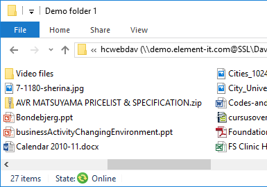
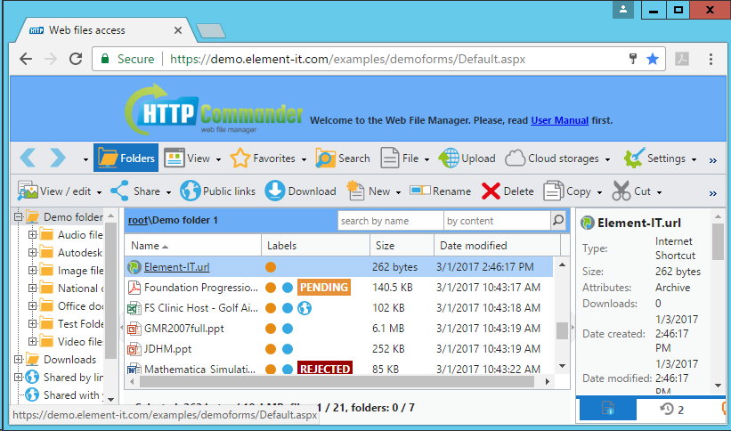

Помощь по веб-менеджеру файлов и документов
Навигация
Папки
Доступны одна или несколько корневых папок. Они отображаются слева в виде дерева.
Используйте кнопку Папки на панели инструментов, чтобы показать или скрыть дерево папок.
Список
Правее в центре — список содержимого выбранной папки.
Для перехода ко вложенной или родительской папке щелкните мышью по названию.
Выбор файла
Вы можете выбрать один или несколько файлов или папок, нажав на элементах списка
и используя клавиши Ctrl и Shift. Также с помощью контекстного меню вы можете выделить все файлы
или инвертировать текущее выделение.
Меню
Контекстное меню можно вызвать, щелкнув правой кнопкой мыши или нажав кнопку Файл на панели инструментов.
Основные операции с файлами
Вы можете выполнять все основные операции с файлами:
создание, копирование, редактирование, перемещение, удаление,
переименование, предпросмотр, архивирование и распаковку.
Загрузка и скачивание файлов
Загрузка
В зависимости от настроек приложения, вы можете использовать несколько способов для загрузки файлов:
- Стандартный — загрузка файлов по одному с помощью встроенных возможностей браузера (по кнопке Browse...).
Внимание! Последние версии браузеров (Google Chrome, Mozilla Firefox, Microsoft Internet Explorer)
поддерживают возможность выбора и загрузки сразу нескольких файлов одновременно.
Если вы используете браузер Google Chrome версии 11 и выше, то доступен выбор и загрузка папок.
- Drag & Drop — в случае использования последней версии вашего браузера,
вы можете добавлять файлы перетаскиванием и затем загружать их параллельно.
- Java — вы можете выбрать и загрузить несколько файлов и папок одновременно.
- Flash — позволяет выбирать и загружать сразу несколько файлов одновременно.
- Silverlight — выбор и загрузка нескольких файлов одновременно по частям
(это позволяет загружать файлы размером, превышающим 2 Гб).
Также этот способ позволяет добавлять файлы перетаскиванием.
- Google Drive — загрузка файлов из вашего облачного хранилища
Google Drive.
- Dropbox — загрузка ваших файлов из Dropbox.
- Microsoft OneDrive — загрузка файлов из вашего хранилища
OneDrive.
- Box — загрузка ваших файлов из Box.
- Загрузка по URL — вы можете указать URL адрес файла, расположенного в Internet (в том числе и по FTP)
или в файлообменных сервисах, таких как Dropbox,
Picasa,
Flickr,
PhotoBucket,
 Facebook.
Facebook.
Примечание. Для загрузки нескольких файлов вы можете запаковать их в ZIP архив, загрузить
его и затем распаковать, используя пункт Распаковать архив в контекстном меню.
Скачивание
Выберите один или несколько файлов и/или папок, нажмите на кнопку Скачать (на панели инструментов или в контекстом меню).
В зависимости от настроек, вы можете скачать файлы по одному из открывшегося списка, либо использовать
Загрузчик Java для загрузки нескольких файлов и папок.
Также могут быть доступны и другие способы для скачивания файлов/папок:
- Сжать и
скачать — способ для автоматического создания архива из выбранных файлов, папок
с последующим скачиванием ZIP архива.
- Облачные хранилища →
сохранить в... Google Drive,
Dropbox, OneDrive, Box — вы можете загрузить выбранные файлы, папки в популярные
облачные хранилища. Более подробная информация представлена в разделе Облачные хранилища.
Ссылки
на файлы и папки
Эта возможность позволять быстро скачать файл не загружая основной интерфейс или открыть нужную папку.
В контекстном меню выберите подменю Общий доступ
(или найдите соответствующую кнопку на панели инструментов) и далее пункт Ссылка на файл/папку.
Обратите внимание, что для использования полученной ссылки другими пользователями требуется аутентификация и доступ
к этому файлу или папке. В противном случае будет сообщено об ошибке.
Совместное
использование файлов и папок
Вы можете создавать ссылки на файлы и папки, доступные для других пользователей без авторизации. Для этого выберите
нужный файл или папку, затем в контекстном меню выберите подменю Общий доступ (или найдите соответствующую кнопку на панели инструментов) и
далее пункт Создать ссылку общего
доступа. Эта возможность даёт анонимный доступ к файлу/папке. Любой пользователь, даже тот, кто не имеет учётной
записи в Веб-менеджере, может скачивать файлы и открывать папки по данной ссылке. Такая ссылка на папку также
может предоставлять пользователям возможность загружать файлы, папки (в виде архива или по одному) в ваш каталог.
При создании общедоступной ссылки вы можете указать адреса электронной почты для уведомления об активности
использования этой ссылки.
Подключение
веб-папок (Web Folders ссылки)
 Веб-папки позволяют открывать ваши каталоги локально в операционной системе,
используя протокол WebDAV. В этом случае вы можете
работать с вашими файлами локально без использования браузера и необходимости входа каждый раз в вашу учётную запись.
Вам достаточно открыть папку, подключённую как сетевой диск в вашей операционной системе (в частности, в Microsoft
Windows – в проводнике Windows Explorer). Поддерживаются все популярные операционные системы, такие как
Microsoft Windows, Apple Mac OS, Ubuntu и др.
Для подключения выполните следующие шаги:
- Выделите нужную папку; в контекстном меню перейдите в подменю ещё (или нажмите соответствующую кнопку на панели инструментов)
и далее Подключить веб-папку.
- В случае, если вы используете операционную систему Windows, то скопируйте одну из предложенных команд подключения
в командную строку Windows (может быть доступно до трёх команд: для текущей папки, родительской и корневой). Например:
net use "*" "http://example.com/htcomnet/hcwebdav/". Далее,
нажмите OK и если потребуется, то введите ваши учётные данные. После этого в проводнике появится
подключённая папка.
- Также для операционных систем Windows доступен и другой способ подключения. Скопируйте выделенную жирным ссылку для
подключения. Или скопируйте ссылку для корневой папки из поля ниже:
Затем в проводнике Windows нажмите правой кнопкой мыши на значке Компьютер (либо Этот компьютер
для Windows 8, 8.1). Выберите пункт Добавить сетевую папку. В открывшемся диалоге нажмите кнопку
Далее. Выберите настраиваемую сетевую папку и нажмите кнопку Далее. В поле с адресом вставьте
скопированную ссылку и нажмите кнопку Далее.
- В Mac OS: в меню программы Finder выберите Go → Connect
to Server, вставьте скопированную ссылку в поле Server address, нажмите кнопку Connect;
в открывшемся диалоге выберите Registered user и нажмите кнопку Connect.
- В Ubuntu: перейдите Go → Location.... Вставьте скопированную ссылку в поле
с адресом. В случае, если ссылка начинается: с символов http://, то замените их на dav://,
c символов https:// – davs://.
После подключения веб-папки вы можете повторно открывать её без использования браузера (даже после перезагрузки компьютера).
Учтите, что если вы сменили пароль, то необходимо будет снова подключить сетевую папку (за исключением,
когда используется встроенная проверка Windows).
Смотрите также:
Using the WebDAV Redirector with OneDrive Part 1 - Standard Security
Using the WebDAV Redirector with OneDrive Part 2 - Two-Step Verification
Дополнительные сведения о файлах
Вы можете просмотреть и указать свойства, комментарии, описания или другие дополнительные сведения о файлах и папках,
нажав в контекстном меню пункт Свойства.
Комментарии: Для быстрого добавления комментариев предусмотрено специальное поле в окне деталей. Также количество комментариев у файла может отображаться в списке файлов .
Метки: Метки отображаются в списке файлов и позволяют быстро находить нужные файлы и папки. Метки могут быть установлены как для файлов так и для папок.
Вы можете установить метку выбрав пункт Label в контекстном меню.
В появившемся подменю вы можете выбрать одну из предустановленных меток, удалить метку выбрав пункт No Label или же назначить вашу собственную метку, выбрав Custom Label
и задав цвет и текст для новой метки.
Примечание! Сведения, комментарии и метки сохраняются даже если файлы или папки будут скопированы, перемещены или переименованы.
Просмотр и редактирование документов, изображений
Веб-файл менеджер имеет много возможностей для работы с документами.
Просмотр документов
Текстовые и PDF документы, файлы изображений вы можете просмотреть прямо в браузере, выбрав пункт Просмотр / редактирование → Показать в браузере в контекстном меню или на панели инструментов.
Если в каталоге содержатся файлы изображений, то для их просмотра в виде слайд-шоу можно использовать возможность
Просмотр / редактирование → Просмотр изображений, либо переключить вид списка файлов
в режим просмотра эскизов (кнопка на панели инструментов Вид → Эскизы).
Кроме того, вы можете использовать онлайн-сервисы Google Docs, Microsoft Office Web Viewer, Box View
для просмотра документов различных форматов.
Для этого, выделите нужный файл, выберите в меню (или на панели инструментов) Просмотр / редактирование нужный пункт (если он разрешён администратором).
Далее будет сформирована ссылка, перейдя по которой, вы можете просмотреть файл.
Список поддерживаемых форматов для просмотра в сервисе Google Docs:
pdf, doc, docx, ppt, pptx, tif, tiff, xls, xlsx, pages, ai, psd, svg, eps, ps, xps, ttf, zip, rar, dxf, txt, css,
html, htm, php, c, cpp, h, hpp, js.
Список поддерживаемых форматов для просмотра в Microsoft Office Web Viewer:
doc, docx, docm, dotm, dotx, xls, xlsx, xlsb, xlsm, pptx, ppsx, ppt, pps, pptm, potm, ppam, potx, ppsm
(при этом размер Word и PowerPoint документов не должен превышать 10 МБ, а Excel документов – 5 МБ).
Список поддерживаемых форматов для просмотра в Box View:
pdf, doc, docx, ppt, pptx, xls, xlsx, txt, py, js, xml, css, md, pl, c, m, json.
Вы также можете конвертировать различные типы файлов с помощью сервиса CloudConvert ( Просмотр / редактирование → Конвертирование в CloudConvert).
Онлайн-редактирование документов
Небольшие по размеру текстовые документы вы можете редактировать, выбрав в контекстном меню (или на панели инструментов)
пункт Просмотр / редактирование → Редактировать как текстовый документ.
Для редактирования офисных документов онлайн доступно несколько сервисов .
-
Редактирование документов в
Google Drive
Поддерживаемые форматы : (docx,doc,xlsx,xls,pptx,ppt,pdf,txt,odt,ods).
Для редактирования выберите в контекстном меню View / edit →
Edit in Google Drive.
Внимание Вам потребуется войти в ваш аккаунт Google и предоставить доступ для приложения к вашему аккаунту. Выбранный документ будет временно загружен в ваш Google аккаунт, затем после редактирования, он будет автоматически скачан и удален.
-
Редактирование документов в
Microsoft Office Online / Microsoft Office 365
Поддерживаемые форматы : (docx,odt,docm,xlsx,xlsb,xlsm,ods,pptx,ppsx,odp,txt).
Для редактирования выберите в контекстном меню View / edit →
Edit in MS Office Online ( Edit in Microsoft Office 365) .
Внимание Вам потребуется войти в ваш аккаунт Microsoft и предоставить доступ для приложения к вашему аккаунту.
-
Также с помощью сервиса Zoho Docs вы можете редактировать популярные форматы офисных документов
(doc, docx, xls, xlsx, ppt, pptx, pps, odt, ods, odp, sxw, sxc, sxi, wpd, rtf, txt, html, csv, tsv),
выбрав Просмотр / редактирование → Редактировать в Zoho Docs.
Файлы изображений (jpg, jpeg, png, gif, bmp, psd, pxd) можно редактировать с помощью онлайн-сервиса
Pixlr: Просмотр / редактирование → Редактировать в Pixlr. Помимо редактирования, вы можете создавать в Pixlr
новые изображения, воспользовавшись в контекстном меню или на панели инструментов командой Создать → Изображение в Pixlr.
Основным средством онлайн-редактирования офисных документов являются установленные на компьютере приложения
Microsoft Office, либо бесплатные
Apache OpenOffice, LibreOffice. При этом, вам не нужно самим скачивать и потом
загружать файл после редактирования. Microsoft Office, OpenOffice, LibreOffice сделают это автоматически.
Достаточно, чтобы эти приложения были установлены локально на вашем компьютере.
Как это происходит:
- Вы выбираете файл одного из поддерживаемых форматов Microsoft Office: accda, accdb, accdc,
accde, accdp, accdr, accdt, accdu, ade, adp, maf, mam, maq, mar, mat, mda, mde,
mdt, mdw, laccdb, snp, csv, dbf, dif, ods, prn, slk, xla, xlam, xls, xlsb, xlsm,
xlsx, xlt, xltm, xltx, xlw, xml, xps, obi, oft, ost, prf, pst, msg, oab, iaf, emf,
odp, pot, potm, potx, ppa, ppam, pps, ppsm, ppsx, ppt, pptm, pptx, pptx, rtf, thmx,
tif, wmf, xml, xps, doc, docm, docx, dot, dotm, dotx, htm, html, mht, mhtml, odt,
rtf, txt, wps, xml, xps, btr, dwt, elm, fwp, htx, mso
или OpenOffice / LibreOffice: sxd, sxm, sxi, sxc, sxw, odb, odf, odt, ott,
oth, and, odm, sxw, stw, sxg, doc, dot, xml, docx, docm, dotx, dotm, wpd, wps, rtf,
txt, csv, sdw, sgl, vor, uot, uof, jtd, jtt, hwp, 602, pdb, psw, ods, ots, sxc,
stc, xls, xlw, xlt, xlsx, xlsm, xltx, xltm, xlsb, wk1, wks, 123, dif, csv, sdc,
vor, dbf, slk, uos, uof, pxl, wb2, odp, odg, std, otp, otg, sxi, sti, ppt, pps,
pot, pptx, pptm, potx, potm, ppsx, sda, sdd, sdp, vor, uop, uof, cgm, bmp, jpeg,
jpg, pcx, psd, sgv, wmf, dxf, met, pgm, ras, svm, xbm, emf, pbm, plt, sda, tga,
xpm, eps, pcd, png, sdd, tif, tiff, gif, pct, ppm, sgf, vor, mml.
- Далее, в меню Просмотр /
редактирование вам нужно выбрать одну из команд: Редактировать в MS Office или Редактировать в OpenOffice / LibreOffice.
После чего запустится соответствующее приложение и откроет выбранный файл на редактирование.
Если по каким-то причинам программа не запустилась, то скопируйте ссылку на файл и откройте её непосредственно
в нужном вам приложении Microsoft Office, OpenOffice или LibreOffice.
- Для сохранения изменений, вы нажимаете комбинацию клавиш Ctrl+S или команду Сохранить
в файловом меню приложения Microsoft Office, OpenOffice или LibreOffice. При этом документ будет
сохранён и загружен автоматически.
Возможности и настройки Microsoft Office:
- Microsoft Office по умолчанию не работает при включённой проверке подлинности Basic
без защищённого соединения SSL (не позволяет открывать документ, либо открывает его в режиме только для чтения).
Если при запуске приложения вы получили такое уведомление, то вы можете исправить эту ситуацию, путём внесения
изменений в реестр Windows. Для этого выполните следующие шаги (за более подробной информацией обратитесь к статье
KB2123563):
- Microsoft Office поддерживает блокировку файлов для предотвращения одновременного редактирования несколькими
пользователями. Если файл был заблокирован другим пользователем, вы не сможете изменить его, но при этом у вас будет
возможность просмотреть его, и как только файл будет доступен – получить соответствующее уведомление об этом.
- По умолчанию Microsoft Office блокирует редактирование документа. После включения возможности изменения документа
файл повторно скачивается с сервера. Для повышения эффективности вы можете в настройках включить возможность
редактировать файл сразу при открытии: в меню Microsoft Office выберите Файл → Настройки →
Центр управления → Настройки центра управления... (кнопка) → Режим защищенного просмотра,
снимите отметку с пункта Включить режим защищенного просмотра для файлов из Internet.
- Microsoft Office 2010 не поддерживает ссылки на файлы длиной более 255 символов, поэтому
старайтесь использовать короткие имена файлов с ASCII символами.
Возможности и настройки OpenOffice, LibreOffice:
Эти приложения являются бесплатными и доступны на сайтах OpenOffice,
LibreOffice для многих операционных систем. На текущий момент OpenOffice не поддерживает блокировки
файлов при совместном использовании. LibreOffice частично поддерживает возможность блокировки.
Для запуска этих приложений используется Java-апплет. Если вы не хотите разрешать запуск этого апплета,
то вы можете скопировать ссылку на файл и открыть её непосредственно в диалоге открытия файлов
OpenOffice, LibreOffice.
Рекомендуемые настройки для OpenOffice, LibreOffice:
- Если при открытии документов вы не хотите каждый раз вводить логин/пароль, то вы можете включить Быстрый запуск
OpenOffice (LibreOffice), который сохраняет информацию о пользователе:
перейдите в Сервис → Параметры → OpenOffice (LibreOffice) → Память
и отметьте пункт Загружать OpenOffice (LibreOffice) во время запуска системы.
- Для открытия и сохранения документов по ссылке (без использования Java-апплета), вам необходимо включить
следующую настройку: Сервис → Параметры → OpenOffice (LibreOffice) →
Использовать диалоги OpenOffice (LibreOffice).
Облачные хранилища
В контекстном меню или на панели инструментов доступно (в зависимости от настроек) меню
Облачные хранилища,
которое позволяет взаимодействовать (загружать и скачивать файлы, папки) с популярными облачными сервисам
хранения данных: Google Drive, Dropbox, Microsoft OneDrive, Box.
Загрузка, сохранение
документов в Google Drive (онлайн редактор и совместное использование документов)
Вы можете сохранять документы в свой Google Drive ( Облачные хранилища → сохранить в... → Google Drive) или загружать их ( Облачные хранилища → загрузить из... → Google Drive). После сохранения документов в ваш
Google Drive, вы можете прямо в браузере отредактировать их (с помощью возможностей Google) и затем скачать обратно
в веб-файл менеджер. При авторизации в Google Drive, ваши учётные данные (логин/пароль) не передаются на сервер
веб-файл менеджера.
Dropbox —
бесплатный облачный сервис хранения данных, резервного копирования, синхронизации, обмена и совместного
использования файлов.
Для сохранения в Dropbox выделите нужные файлы, папки и воспользуйтесь командой Облачные хранилища → сохранить в... → Dropbox. Для загрузки — Облачные хранилища → загрузить из... → Dropbox. При авторизации ваши учётные данные передаются только
на сервера Dropbox.
Microsoft OneDrive
Вы можете зарегистрироваться в бесплатном сервисе облачного хранения данных, редактирования и обмена документами
Microsoft OneDrive (если у вас уже есть учётная запись Microsoft,
то вам не нужно регистрироваться для доступа к OneDrive!). C помощью веб-файл менеджера вы можете сохранять свои
файлы, папки в ваш OneDrive ( Облачные
хранилища → сохранить в... → Microsoft OneDrive) или загружать их ( Облачные хранилища → загрузить из... → Microsoft OneDrive). Также на сайте OneDrive вы можете
редактировать свои документы и обмениваться ими с другими пользователями.
Box —
облачный сервис хранения и совместного использования документов
Для сохранения в Box выделите нужные файлы, папки и воспользуйтесь командой Облачные хранилища → сохранить в... → Box. Для загрузки — Облачные хранилища → загрузить из... → Box.
 Гиперссылки
Гиперссылки
Веб-файл менеджер позволяет открывать гиперссылки. Они представляют собой файлы небольшого размера
с расширением .url. Нажмите на ссылки и откроется новое
окно браузера (или новая вкладка) с содержимым, расположенных по этой ссылке.
Пример

Для создания файла гиперссылки (.url) нужен Internet Explorer:
- Откройте нужную вам веб-страницу в Internet Explorer.
- Откройте файловое меню (нажмите клавишу F10 или Alt, если его не видно), далее
Файл → Отправить → Ярлык на рабочий стол.
- Загрузите созданный ярлык в веб-файл менеджер.
Также вы можете изменить имя файла с гиперссылкой, но при этом не меняйте расширение файла.
Примечание. .URL файлы являются стандартными для Windows INI файлами с собственным расширением.
Вы можете создать их в текстовом редакторе, если у вас нет Internet Explorer или вы не хотите его использовать.
Мобильный интерфейс для смартфонов и устройств с сенсорными экранами 
Вы можете использовать 100% мобильный интерфейс на своих устройствах:
на панели инструментов нажмите кнопку Настройки → Мобильный интерфейс,
либо в адресной строке браузера укажите Default.aspx?Mobile=.
Приложение поддерживает следующие устройства: iPhone/iPad, Android,
Blackberry v.6+, Bada, Windows Mobile, Phone и многие другие
операционные системы мобильных устройств.
Также вы можете скачать мобильные приложения для ваших iPhone/iPad:
http://itunes.apple.com/us/app/http-commander/id561413475?mt=8
и Android: https://play.google.com/store/apps/details?id=com.elementit.httpcommander.
За более подробной информацией обратитесь к помощи для пользователей мобильных устройств..
Настройки
На панели инструментов нажмите кнопку Настройки и выберите требуемый тип настроек.
В появившемся меню доступны следующие возможности:
- Изменение языка интерфейса.
- Изменение пароля.
- Изменение адреса электронной почты.
- Переход к мобильному интерфейсу (эта возможность может быть отключена администратором).